2023 Higher Chemistry - Paper 2 questions
Source: Scottish Qualifications Authority (SQA) / Qualifications Scotland. This is a StemInteract HTML companion, not an official HTML edition. Selectable text is supplied alongside original page images. Use the images or original PDF for equations, powers, fractions, vector notation, tables and diagrams; text extraction cannot fully preserve mathematical layout.
Jump to a question
PDF page 1
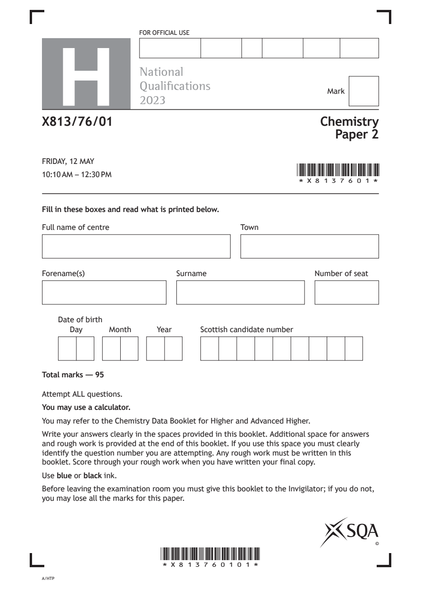
Selectable page text
FOR OFFICIAL USE
H
National
Qualications
Mark
2023
X813/76/01 Chemistry
Paper 2
FRIDAY, 12 MAY
10:10 AM – 12:30 PM
*X8137601*
Fill in these boxes and read what is printed below.
Full name of centre Town
Forename(s) Surname Number of seat
Date of birth
Day Month Year Scottish candidate number
Total marks — 95
Attempt ALL questions.
You may use a calculator.
You may refer to the Chemistry Data Booklet for Higher and Advanced Higher.
Write your answers clearly in the spaces provided in this booklet. Additional space for answers
and rough work is provided at the end of this booklet. If you use this space you must clearly
identify the question number you are attempting. Any rough work must be written in this
booklet. Score through your rough work when you have written your final copy.
Use blue or black ink.
Before leaving the examination room you must give this booklet to the Invigilator; if you do not,
you may lose all the marks for this paper.
©
*X813760101*
A/HTPPDF page 2
Paper 2, Question 1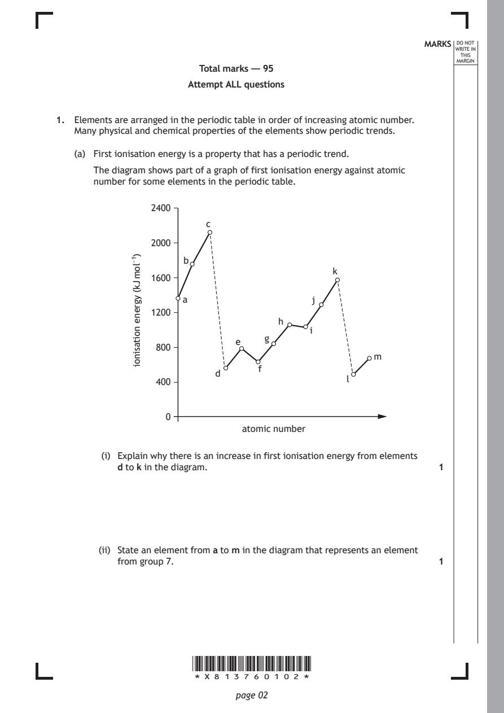
Selectable page text
MARKS _{W}^{D}_{R}^{O}_{I} _{T}^{N}OT
E IN
THIS
MARGIN
Total marks — 95
Attempt ALL questions
1. Elements are arranged in the periodic table in order of increasing atomic number.
Many physical and chemical properties of the elements show periodic trends.
(a) First ionisation energy is a property that has a periodic trend.
The diagram shows part of a graph of first ionisation energy against atomic
number for some elements in the periodic table.
*X813760102*
page 02
)1-lom
Jk(
ygrene
noitasinoi
2400
c
2000
b
k
1600
a j
1200
h
i
g
e
800
m
f
d
l
400
0
atomic number
(i) Explain why there is an increase in first ionisation energy from elements
d to k in the diagram. 1
(ii) State an element from a to m in the diagram that represents an element
from group 7. 1PDF page 3
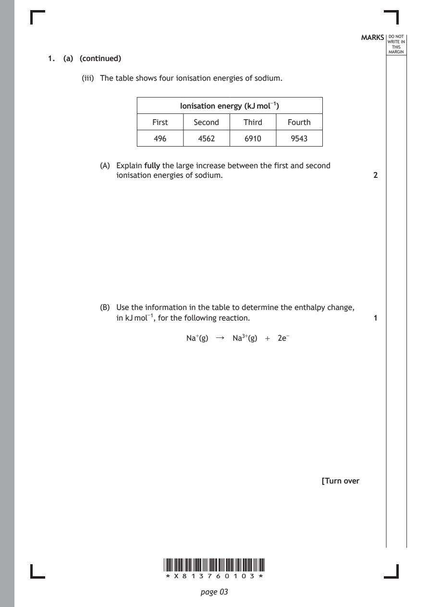
Selectable page text
MARKS _{W}^{D}_{R}^{O}_{I} _{T}^{N}OT
E IN
THIS
MARGIN
1. (a) (continued)
(iii) The table shows four ionisation energies of sodium.
Ionisation energy (kJ mol⁻¹)
First Second Third Fourth
496 4562 6910 9543
(A) Explain fully the large increase between the first and second
ionisation energies of sodium. 2
(B) Use the information in the table to determine the enthalpy change,
in kJ mol⁻¹, for the following reaction. 1
Na⁺(g) ↓ Na³⁺(g) + 2e⁻
[Turn over
*X813760103*
page 03PDF page 4
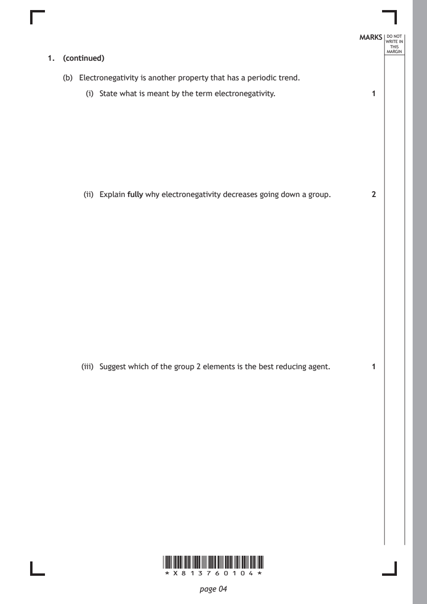
Selectable page text
MARKS _{W}^{D}_{R}^{O}_{I} _{T}^{N}OT
E IN
THIS
MARGIN
1. (continued)
(b) Electronegativity is another property that has a periodic trend.
(i) State what is meant by the term electronegativity. 1
(ii) Explain fully why electronegativity decreases going down a group. 2
(iii) Suggest which of the group 2 elements is the best reducing agent. 1
*X813760104*
page 04PDF page 5
Paper 2, Question 2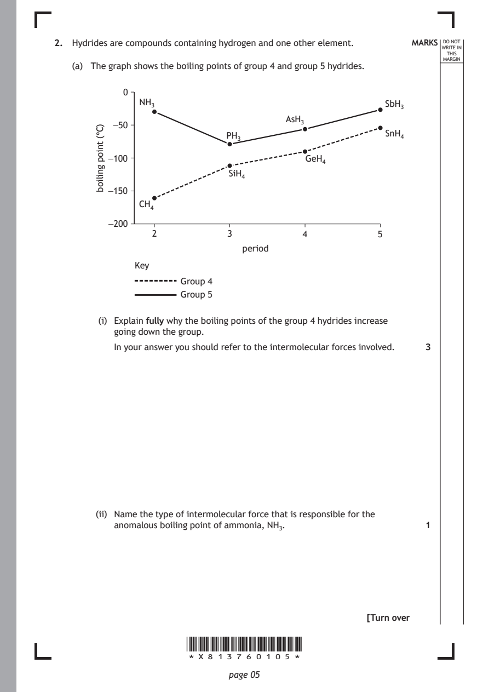
Selectable page text
2. Hydrides are compounds containing hydrogen and one other element. MARKS _{W}^{D}_{R}^{O}_{I} _{T}^{N}OT
E IN
THIS
MARGIN
(a) The graph shows the boiling points of group 4 and group 5 hydrides.
0
NH₃ SbH₃
AsH₃
-50
PH₃ SnH₄
-100 GeH₄
SiH₄
-150
CH₄
-200
4 5
Key
Group 4
Group 5
*X813760105*
page 05
)C°(
tniop
gniliob
2 3
period
(i) Explain fully why the boiling points of the group 4 hydrides increase
going down the group.
In your answer you should refer to the intermolecular forces involved. 3
(ii) Name the type of intermolecular force that is responsible for the
anomalous boiling point of ammonia, NH₃. 1
[Turn overPDF page 6
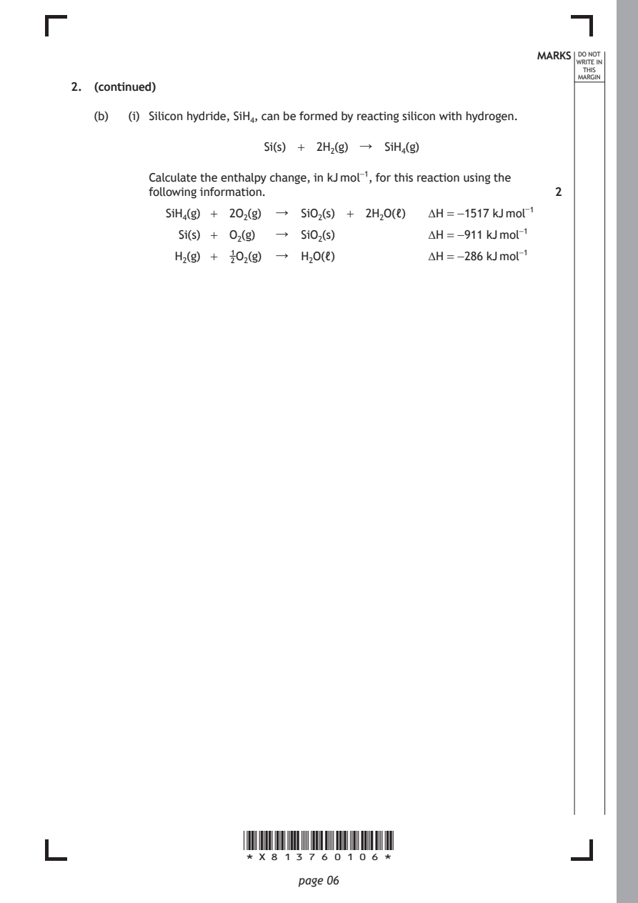
Selectable page text
MARKS _{W}^{D}_{R}^{O}_{I} _{T}^{N}OT
E IN
THIS
MARGIN
2. (continued)
(b) (i) Silicon hydride, SiH₄, can be formed by reacting silicon with hydrogen.
Si(s) + 2H₂(g) ↓ SiH₄(g)
Calculate the enthalpy change, in kJ mol⁻¹, for this reaction using the
following information. 2
SiH₄(g) + 2O₂(g) ↓ SiO₂(s) + 2H₂O(ℓ) ΔH = -1517 kJ mol⁻¹
Si(s) + O₂(g) ↓ SiO₂(s) ΔH = -911 kJ mol⁻¹
H₂(g) + 1O₂(g) ↓ H₂O(ℓ) ΔH = -286 kJ mol⁻¹
2
*X813760106*
page 06PDF page 7
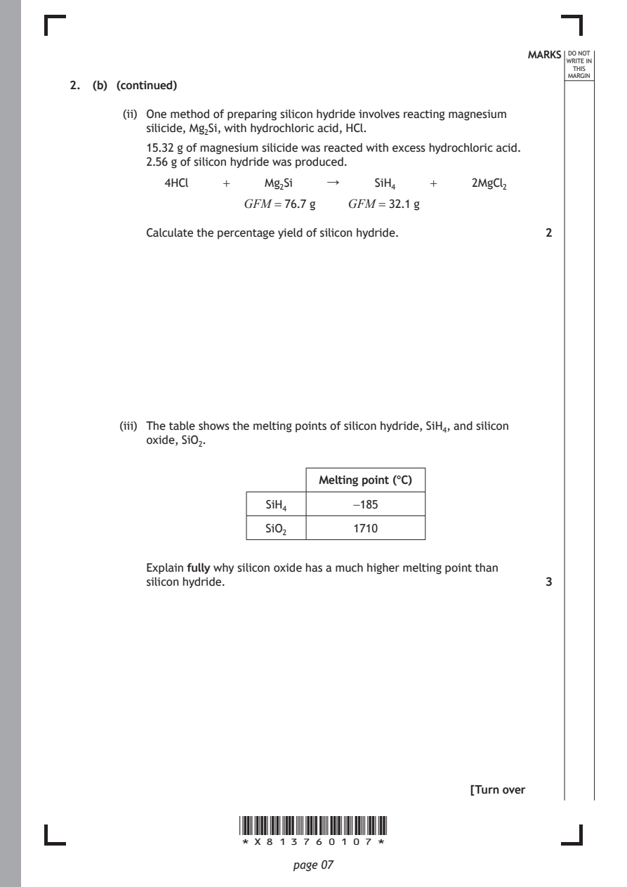
Selectable page text
MARKS _{W}^{D}_{R}^{O}_{I} _{T}^{N}OT
E IN
THIS
MARGIN
2. (b) (continued)
(ii) One method of preparing silicon hydride involves reacting magnesium
silicide, Mg₂Si, with hydrochloric acid, HCl.
15.32 g of magnesium silicide was reacted with excess hydrochloric acid.
2.56 g of silicon hydride was produced.
4HCl + Mg₂Si ↓ SiH₄ + 2MgCl₂
GFM = 76.7 g GFM = 32.1 g
Calculate the percentage yield of silicon hydride. 2
(iii) The table shows the melting points of silicon hydride, SiH₄, and silicon
oxide, SiO₂.
Melting point (°C)
SiH₄ -185
SiO₂ 1710
Explain fully why silicon oxide has a much higher melting point than
silicon hydride. 3
[Turn over
*X813760107*
page 07PDF page 8
Paper 2, Question 3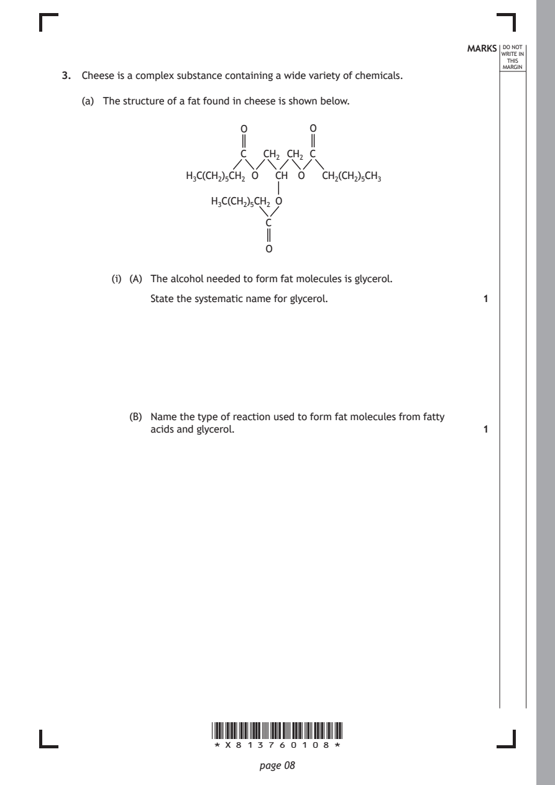
Selectable page text
MARKS _{W}^{D}_{R}^{O}_{I} _{T}^{N}OT
E IN
THIS
MARGIN
3. Cheese is a complex substance containing a wide variety of chemicals.
(a) The structure of a fat found in cheese is shown below.
O O
C CH₂ CH₂ C
H₃C(CH₂)₅CH₂ O CH O CH₂(CH₂)₅CH₃
H₃C(CH₂)₅CH₂ O
C
O
(i) (A) The alcohol needed to form fat molecules is glycerol.
State the systematic name for glycerol. 1
(B) Name the type of reaction used to form fat molecules from fatty
acids and glycerol. 1
*X813760108*
page 08PDF page 9
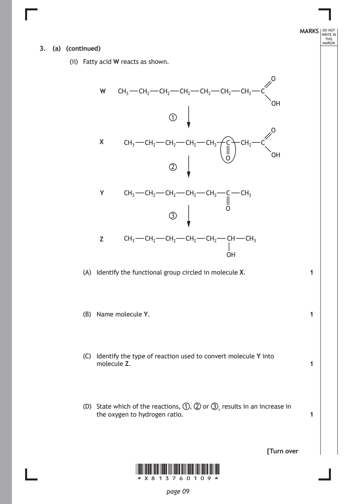
Selectable page text
MARKS _{W}^{D}_{R}^{O}_{I} _{T}^{N}OT
E IN
THIS
MARGIN
3. (a) (continued)
(ii) Fatty acid W reacts as shown.
O
W CH₃ CH₂ CH₂ CH₂ CH₂ CH₂ CH₂ C
OH
1
O
X CH₃ CH₂ CH₂ CH₂ CH₂ C CH₂ C
OH
O
2
Y CH₃ CH₂ CH₂ CH₂ CH₂ C CH₃
O
3
Z CH₃ CH₂ CH₂ CH₂ CH₂ CH CH₃
OH
(A) Identify the functional group circled in molecule X. 1
(B) Name molecule Y. 1
(C) Identify the type of reaction used to convert molecule Y into
molecule Z. 1
(D) State which of the reactions, 1 , 2 or 3 , results in an increase in
the oxygen to hydrogen ratio. 1
[Turn over
*X813760109*
page 09PDF page 10
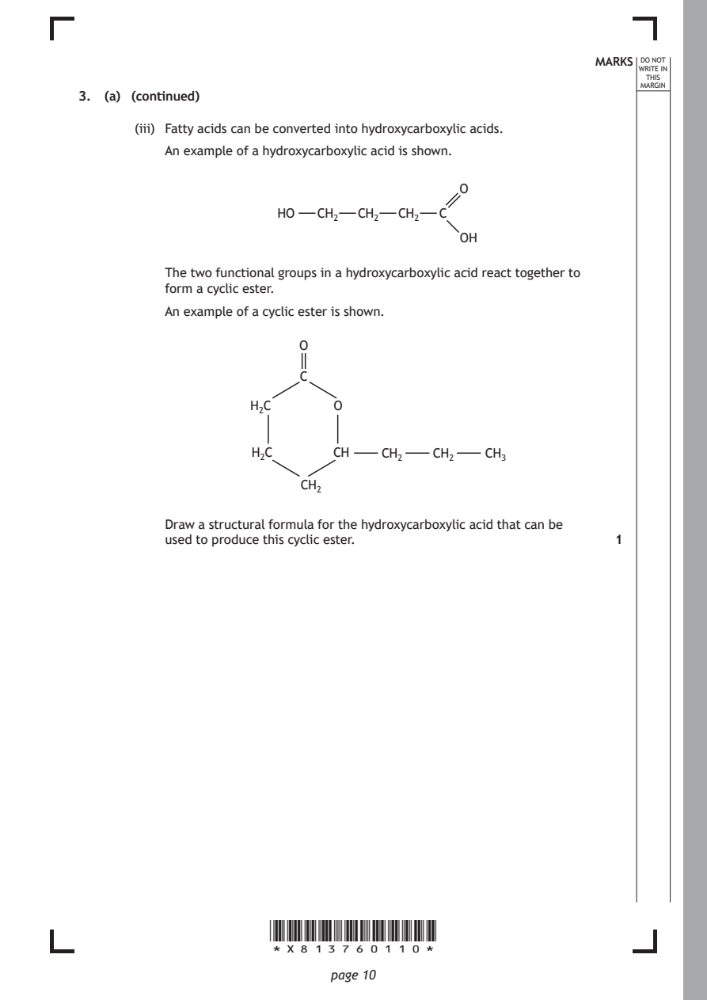
Selectable page text
MARKS _{W}^{D}_{R}^{O}_{I} _{T}^{N}OT
E IN
THIS
MARGIN
3. (a) (continued)
(iii) Fatty acids can be converted into hydroxycarboxylic acids.
An example of a hydroxycarboxylic acid is shown.
O
HO CH₂ CH₂ CH₂ C
OH
The two functional groups in a hydroxycarboxylic acid react together to
form a cyclic ester.
An example of a cyclic ester is shown.
O
C
H₂C O
H₂C CH CH₂ CH₂ CH₃
CH₂
Draw a structural formula for the hydroxycarboxylic acid that can be
used to produce this cyclic ester. 1
*X813760110*
page 10PDF page 11
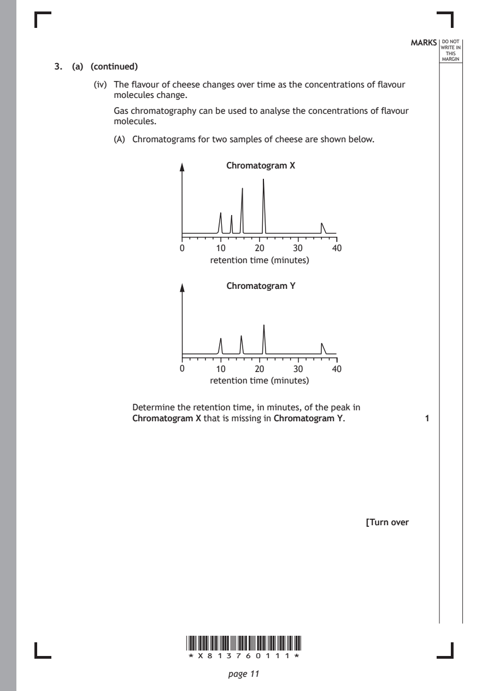
Selectable page text
MARKS _{W}^{D}_{R}^{O}_{I} _{T}^{N}OT
E IN
THIS
MARGIN
3. (a) (continued)
(iv) The flavour of cheese changes over time as the concentrations of flavour
molecules change.
Gas chromatography can be used to analyse the concentrations of flavour
molecules.
(A) Chromatograms for two samples of cheese are shown below.
Chromatogram X
0 10 20 30 40
retention time (minutes)
Chromatogram Y
0 10 20 30 40
retention time (minutes)
Determine the retention time, in minutes, of the peak in
Chromatogram X that is missing in Chromatogram Y. 1
[Turn over
*X813760111*
page 11PDF page 12
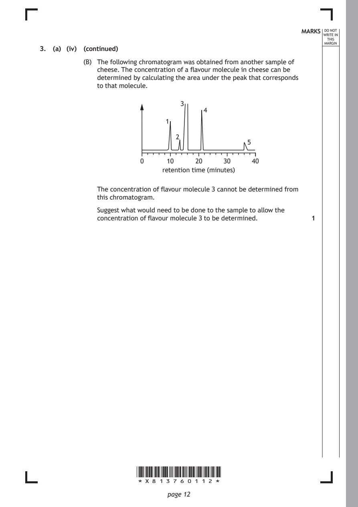
Selectable page text
MARKS _{W}^{D}_{R}^{O}_{I} _{T}^{N}OT
E IN
THIS
MARGIN
3. (a) (iv) (continued)
(B) The following chromatogram was obtained from another sample of
cheese. The concentration of a flavour molecule in cheese can be
determined by calculating the area under the peak that corresponds
to that molecule.
3
4
1
2
5
0 10 20 30 40
retention time (minutes)
The concentration of flavour molecule 3 cannot be determined from
this chromatogram.
Suggest what would need to be done to the sample to allow the
concentration of flavour molecule 3 to be determined. 1
*X813760112*
page 12PDF page 13
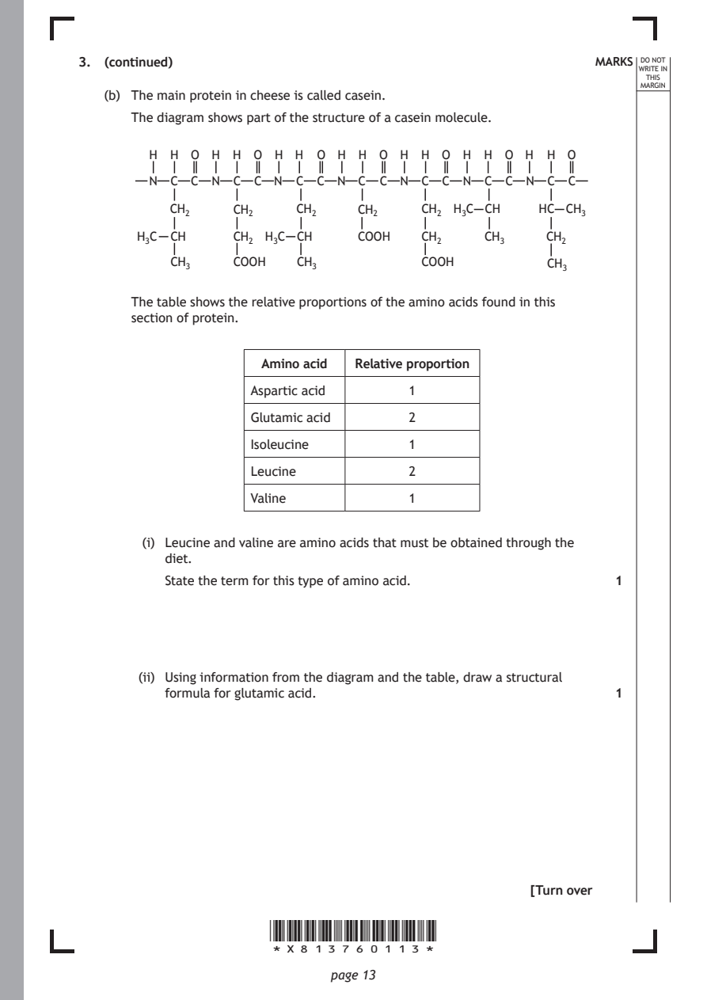
Selectable page text
3. (continued) MARKS _{W}^{D}_{R}^{O}_{I} _{T}^{N}OT
E IN
THIS
MARGIN
(b) The main protein in cheese is called casein.
The diagram shows part of the structure of a casein molecule.
H H O H H O H H O H H O H H O H H O H H O
N C C N C C N C C N C C N C C N C C N C C
CH₂ CH₂ CH₂ CH₂ CH₂ H₃C CH HC CH₃
H₃C CH CH₂ H₃C CH COOH CH₂ CH₃ CH₂
CH₃ COOH CH₃ COOH CH₃
The table shows the relative proportions of the amino acids found in this
section of protein.
Amino acid Relative proportion
Aspartic acid 1
Glutamic acid 2
Isoleucine 1
Leucine 2
Valine 1
(i) Leucine and valine are amino acids that must be obtained through the
diet.
State the term for this type of amino acid. 1
(ii) Using information from the diagram and the table, draw a structural
formula for glutamic acid. 1
[Turn over
*X813760113*
page 13PDF page 14
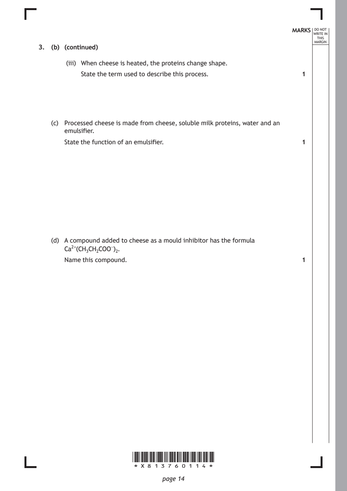
Selectable page text
MARKS _{W}^{D}_{R}^{O}_{I} _{T}^{N}OT
E IN
THIS
MARGIN
3. (b) (continued)
(iii) When cheese is heated, the proteins change shape.
State the term used to describe this process. 1
(c) Processed cheese is made from cheese, soluble milk proteins, water and an
emulsifier.
State the function of an emulsifier. 1
(d) A compound added to cheese as a mould inhibitor has the formula
Ca²⁺(CH₃CH₂COO⁻)₂.
Name this compound. 1
*X813760114*
page 14PDF page 15
Paper 2, Question 4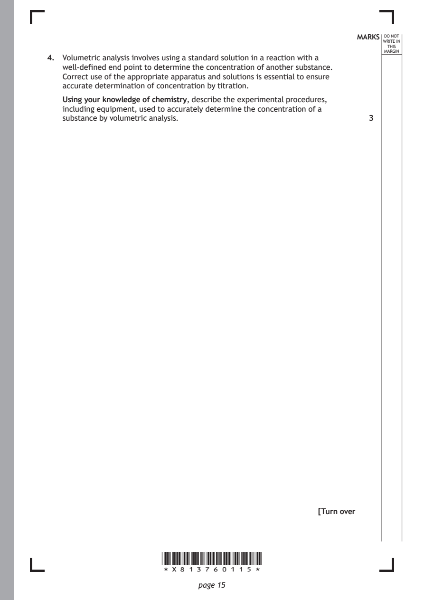
Selectable page text
MARKS _{W}^{D}_{R}^{O}_{I} _{T}^{N}OT
E IN
THIS
MARGIN
4. Volumetric analysis involves using a standard solution in a reaction with a
well‑defined end point to determine the concentration of another substance.
Correct use of the appropriate apparatus and solutions is essential to ensure
accurate determination of concentration by titration.
Using your knowledge of chemistry, describe the experimental procedures,
including equipment, used to accurately determine the concentration of a
substance by volumetric analysis. 3
[Turn over
*X813760115*
page 15PDF page 16
Paper 2, Question 5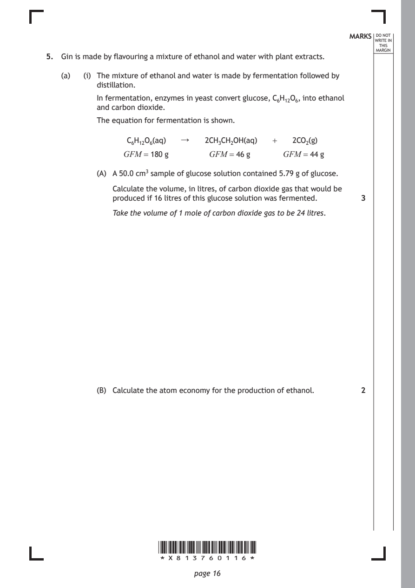
Selectable page text
MARKS _{W}^{D}_{R}^{O}_{I} _{T}^{N}OT
E IN
THIS
MARGIN
5. Gin is made by flavouring a mixture of ethanol and water with plant extracts.
(a) (i) The mixture of ethanol and water is made by fermentation followed by
distillation.
In fermentation, enzymes in yeast convert glucose, C₆H₁₂O₆, into ethanol
and carbon dioxide.
The equation for fermentation is shown.
C₆H₁₂O₆(aq) ↓ 2CH₃CH₂OH(aq) + 2CO₂(g)
GFM = 180 g GFM = 46 g GFM = 44 g
(A) A 50.0 cm³ sample of glucose solution contained 5.79 g of glucose.
Calculate the volume, in litres, of carbon dioxide gas that would be
produced if 16 litres of this glucose solution was fermented. 3
Take the volume of 1 mole of carbon dioxide gas to be 24 litres.
(B) Calculate the atom economy for the production of ethanol. 2
*X813760116*
page 16PDF page 17
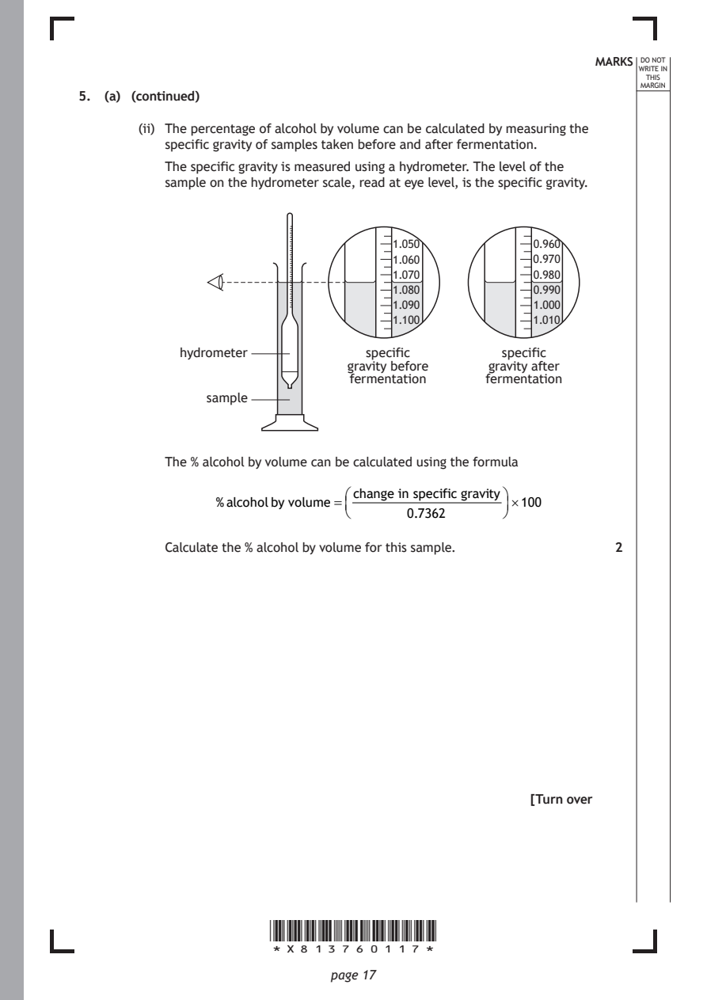
Selectable page text
MARKS _{W}^{D}_{R}^{O}_{I} _{T}^{N}OT
E IN
THIS
MARGIN
5. (a) (continued)
(ii) The percentage of alcohol by volume can be calculated by measuring the
specific gravity of samples taken before and after fermentation.
The specific gravity is measured using a hydrometer. The level of the
sample on the hydrometer scale, read at eye level, is the specific gravity.
1.050 0.960
1.060 0.970
1.070 0.980
1.080 0.990
1.090 1.000
1.100 1.010
hydrometer specific specific
gravity before gravity after
fermentation fermentation
sample
The % alcohol by volume can be calculated using the formula
change in specific gravity
% alcohol by volume= ×100
0.7362
Calculate the % alcohol by volume for this sample. 2
[Turn over
*X813760117*
page 17PDF page 18
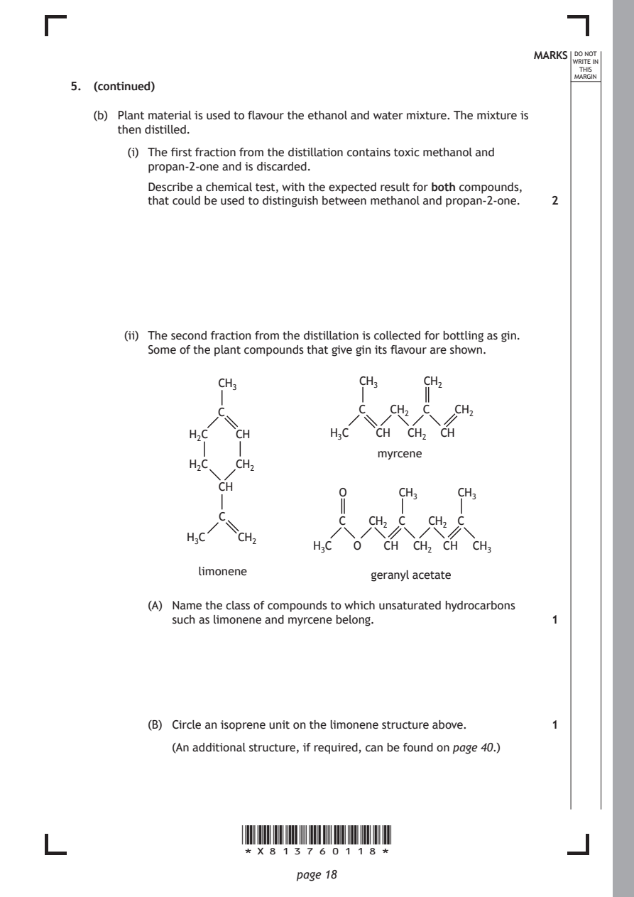
Selectable page text
MARKS _{W}^{D}_{R}^{O}_{I} _{T}^{N}OT
E IN
THIS
MARGIN
5. (continued)
(b) Plant material is used to flavour the ethanol and water mixture. The mixture is
then distilled.
(i) The first fraction from the distillation contains toxic methanol and
propan‑2‑one and is discarded.
Describe a chemical test, with the expected result for both compounds,
that could be used to distinguish between methanol and propan‑2‑one. 2
(ii) The second fraction from the distillation is collected for bottling as gin.
Some of the plant compounds that give gin its flavour are shown.
CH₃ CH₃ CH₂
C C CH₂ C CH₂
H₂C CH H₃C CH CH₂ CH
myrcene
H₂C CH₂
CH
O CH₃ CH₃
C
C CH₂ C CH₂ C
H₃C CH₂
H₃C O CH CH₂ CH CH₃
limonene
geranyl acetate
(A) Name the class of compounds to which unsaturated hydrocarbons
such as limonene and myrcene belong. 1
(B) Circle an isoprene unit on the limonene structure above. 1
(An additional structure, if required, can be found on page 40.)
*X813760118*
page 18PDF page 19
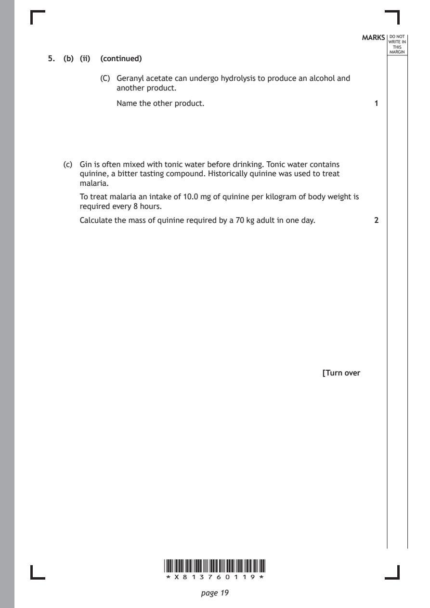
Selectable page text
MARKS _{W}^{D}_{R}^{O}_{I} _{T}^{N}OT
E IN
THIS
MARGIN
5. (b) (ii) (continued)
(C) Geranyl acetate can undergo hydrolysis to produce an alcohol and
another product.
Name the other product. 1
(c) Gin is often mixed with tonic water before drinking. Tonic water contains
quinine, a bitter tasting compound. Historically quinine was used to treat
malaria.
To treat malaria an intake of 10.0 mg of quinine per kilogram of body weight is
required every 8 hours.
Calculate the mass of quinine required by a 70 kg adult in one day. 2
[Turn over
*X813760119*
page 19PDF page 20
Paper 2, Question 6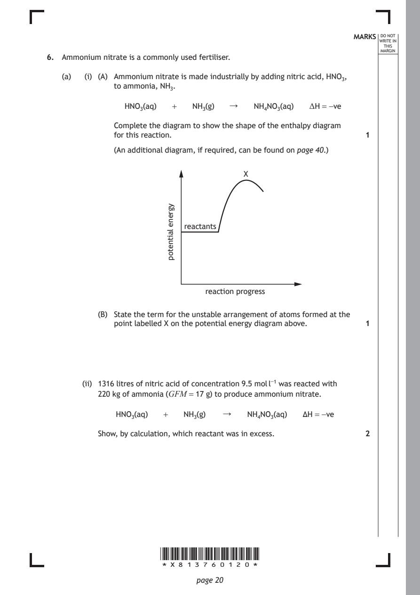
Selectable page text
MARKS _{W}^{D}_{R}^{O}_{I} _{T}^{N}OT
E IN
THIS
MARGIN
6. Ammonium nitrate is a commonly used fertiliser.
(a) (i) (A) Ammonium nitrate is made industrially by adding nitric acid, HNO₃,
to ammonia, NH₃.
HNO₃(aq) + NH₃(g) ↓ NH₄NO₃(aq) ΔH = -ve
Complete the diagram to show the shape of the enthalpy diagram
for this reaction.
(An additional diagram, if required, can be found on page 40.)
reactants
*X813760120*
page 20
ygrene
laitnetop
1
X
reaction progress
(B) State the term for the unstable arrangement of atoms formed at the
point labelled X on the potential energy diagram above. 1
(ii) 1316 litres of nitric acid of concentration 9.5 mol l⁻¹ was reacted with
220 kg of ammonia (GFM = 17 g) to produce ammonium nitrate.
HNO₃(aq) + NH₃(g) ↓ NH₄NO₃(aq) ΔH = -ve
Show, by calculation, which reactant was in excess. 2PDF page 21
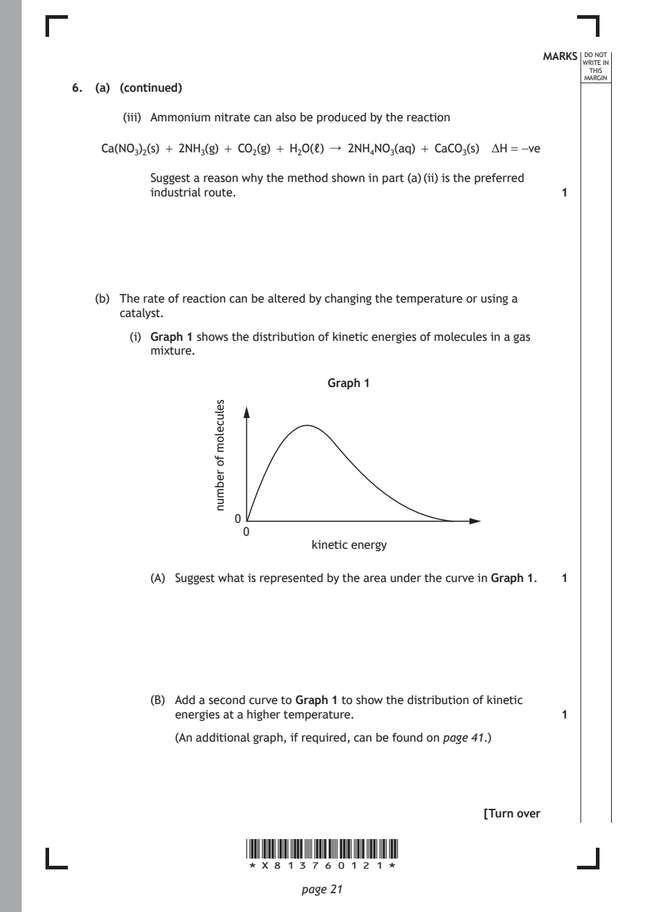
Selectable page text
MARKS _{W}^{D}_{R}^{O}_{I} _{T}^{N}OT
E IN
THIS
MARGIN
6. (a) (continued)
(iii) Ammonium nitrate can also be produced by the reaction
Ca(NO₃)₂(s) + 2NH₃(g) + CO₂(g) + H₂O(ℓ) ↓ 2NH₄NO₃(aq) + CaCO₃(s) ΔH = -ve
Suggest a reason why the method shown in part (a) (ii) is the preferred
industrial route.
(b) The rate of reaction can be altered by changing the temperature or using a
catalyst.
(i) Graph 1 shows the distribution of kinetic energies of molecules in a gas
mixture.
*X813760121*
page 21
selucelom
fo
rebmun
1
Graph 1
0
0
kinetic energy
(A) Suggest what is represented by the area under the curve in Graph 1. 1
(B) Add a second curve to Graph 1 to show the distribution of kinetic
energies at a higher temperature. 1
(An additional graph, if required, can be found on page 41.)
[Turn overPDF page 22
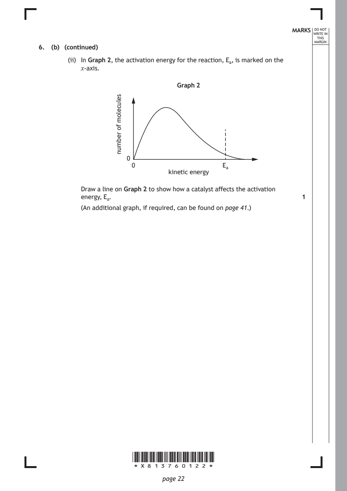
Selectable page text
MARKS _{W}^{D}_{R}^{O}_{I} _{T}^{N}OT
E IN
THIS
MARGIN
6. (b) (continued)
(ii) In Graph 2, the activation energy for the reaction, Eₐ, is marked on the
x‑axis.
*X813760122*
page 22
selucelom
fo
rebmun
Graph 2
0
0 Eₐ
kinetic energy
Draw a line on Graph 2 to show how a catalyst affects the activation
energy, Eₐ. 1
(An additional graph, if required, can be found on page 41.)PDF page 23
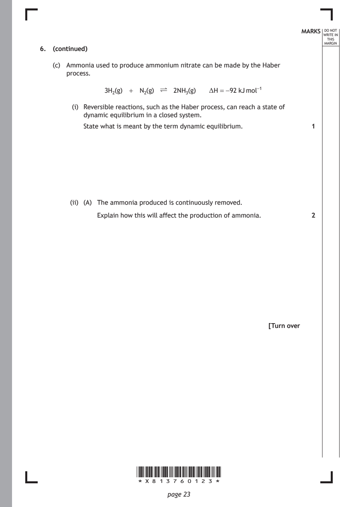
Selectable page text
MARKS _{W}^{D}_{R}^{O}_{I} _{T}^{N}OT
E IN
THIS
MARGIN
6. (continued)
(c) Ammonia used to produce ammonium nitrate can be made by the Haber
process.
3H₂(g) + N₂(g) ∏ 2NH₃(g) ΔH = -92 kJ mol⁻¹
(i) Reversible reactions, such as the Haber process, can reach a state of
dynamic equilibrium in a closed system.
State what is meant by the term dynamic equilibrium. 1
(ii) (A) The ammonia produced is continuously removed.
Explain how this will affect the production of ammonia. 2
[Turn over
*X813760123*
page 23PDF page 24
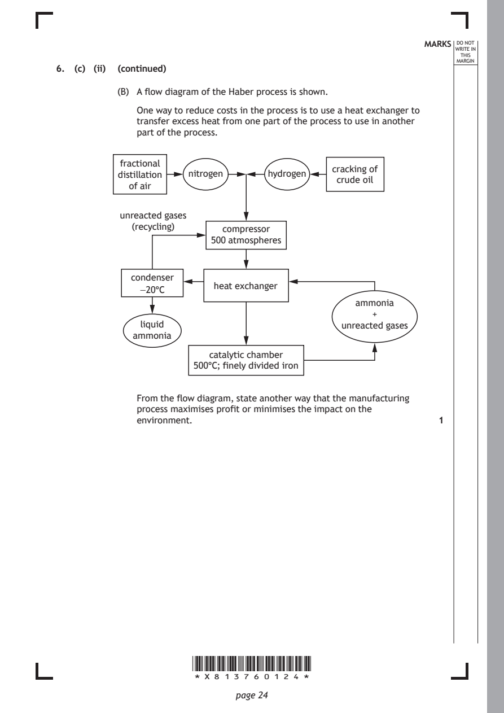
Selectable page text
MARKS _{W}^{D}_{R}^{O}_{I} _{T}^{N}OT
E IN
THIS
MARGIN
6. (c) (ii) (continued)
(B) A flow diagram of the Haber process is shown.
One way to reduce costs in the process is to use a heat exchanger to
transfer excess heat from one part of the process to use in another
part of the process.
fractional
cracking of
distillation nitrogen hydrogen
crude oil
of air
unreacted gases
(recycling)
compressor
500 atmospheres
condenser
heat exchanger
-20°C
ammonia
+
liquid unreacted gases
ammonia
catalytic chamber
500°C; finely divided iron
From the flow diagram, state another way that the manufacturing
process maximises profit or minimises the impact on the
environment. 1
*X813760124*
page 24PDF page 25
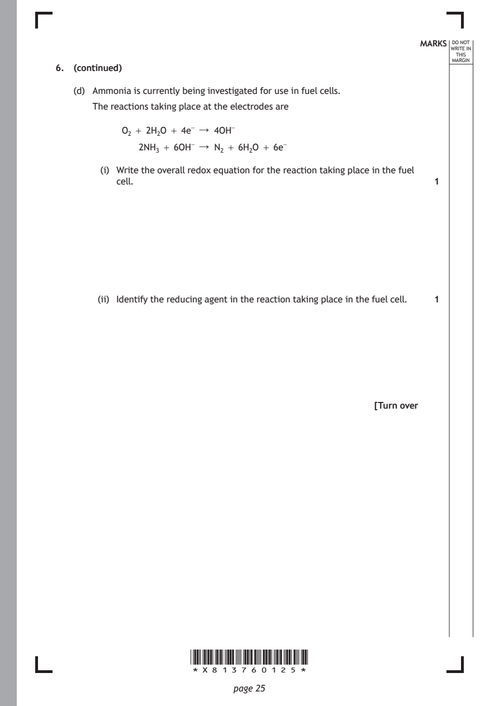
Selectable page text
MARKS _{W}^{D}_{R}^{O}_{I} _{T}^{N}OT
E IN
THIS
MARGIN
6. (continued)
(d) Ammonia is currently being investigated for use in fuel cells.
The reactions taking place at the electrodes are
O₂ + 2H₂O + 4e⁻ ↓ 4OH⁻
2NH₃ + 6OH⁻ ↓ N₂ + 6H₂O + 6e⁻
(i) Write the overall redox equation for the reaction taking place in the fuel
cell. 1
(ii) Identify the reducing agent in the reaction taking place in the fuel cell. 1
[Turn over
*X813760125*
page 25PDF page 26
Paper 2, Question 7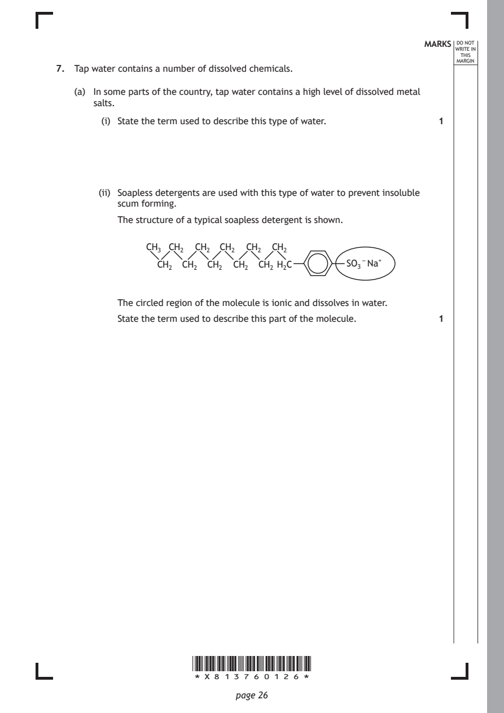
Selectable page text
MARKS _{W}^{D}_{R}^{O}_{I} _{T}^{N}OT
E IN
THIS
MARGIN
7. Tap water contains a number of dissolved chemicals.
(a) In some parts of the country, tap water contains a high level of dissolved metal
salts.
(i) State the term used to describe this type of water. 1
(ii) Soapless detergents are used with this type of water to prevent insoluble
scum forming.
The structure of a typical soapless detergent is shown.
CH₃ CH₂ CH₂ CH₂ CH₂ CH₂
CH₂ CH₂ CH₂ CH₂ CH₂ H₂C SO₃^{–} Na⁺
The circled region of the molecule is ionic and dissolves in water.
State the term used to describe this part of the molecule. 1
*X813760126*
page 26PDF page 27
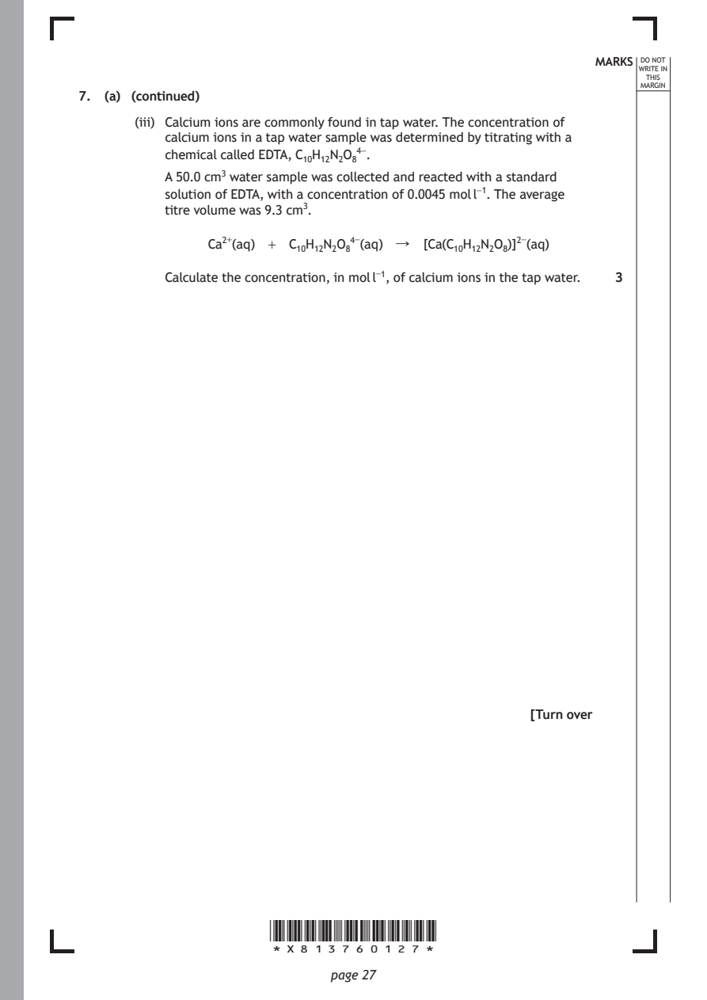
Selectable page text
MARKS _{W}^{D}_{R}^{O}_{I} _{T}^{N}OT
E IN
THIS
MARGIN
7. (a) (continued)
(iii) Calcium ions are commonly found in tap water. The concentration of
calcium ions in a tap water sample was determined by titrating with a
chemical called EDTA, C₁₀H₁₂N₂O₈⁴⁻.
A 50.0 cm³ water sample was collected and reacted with a standard
solution of EDTA, with a concentration of 0.0045 mol l⁻¹. The average
titre volume was 9.3 cm³.
Ca²⁺(aq) + C₁₀H₁₂N₂O₈⁴⁻(aq) ↓ [Ca(C₁₀H₁₂N₂O₈)]²⁻(aq)
Calculate the concentration, in mol l⁻¹, of calcium ions in the tap water. 3
[Turn over
*X813760127*
page 27PDF page 28
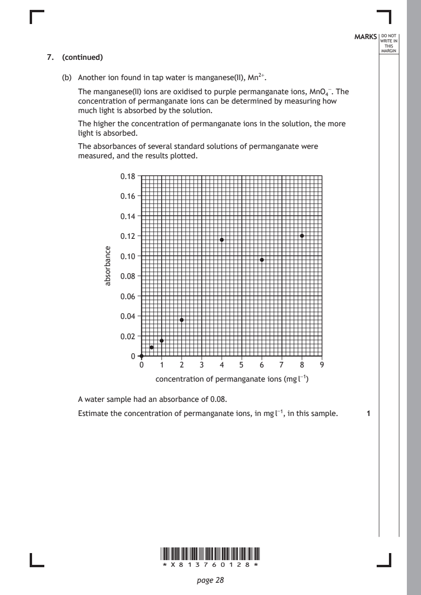
Selectable page text
MARKS _{W}^{D}_{R}^{O}_{I} _{T}^{N}OT
E IN
THIS
MARGIN
7. (continued)
(b) Another ion found in tap water is manganese(II), Mn²⁺.
The manganese(II) ions are oxidised to purple permanganate ions, MnO₄⁻. The
concentration of permanganate ions can be determined by measuring how
much light is absorbed by the solution.
The higher the concentration of permanganate ions in the solution, the more
light is absorbed.
The absorbances of several standard solutions of permanganate were
measured, and the results plotted.
0 1 2 3 4 5 6 7 8 9
concentration of permanganate ions (mg l⁻¹)
*X813760128*
page 28
ecnabrosba
0.18
0.16
0.14
0.12
0.10
0.08
0.06
0.04
0.02
0
A water sample had an absorbance of 0.08.
Estimate the concentration of permanganate ions, in mg l⁻¹, in this sample. 1PDF page 29
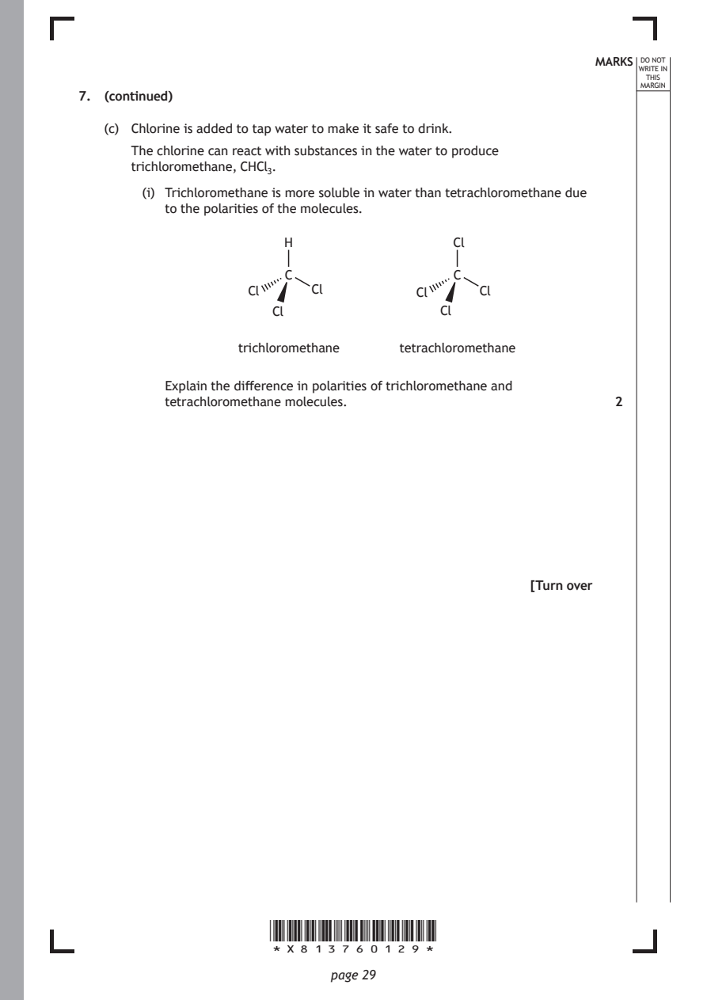
Selectable page text
MARKS _{W}^{D}_{R}^{O}_{I} _{T}^{N}OT
E IN
THIS
MARGIN
7. (continued)
(c) Chlorine is added to tap water to make it safe to drink.
The chlorine can react with substances in the water to produce
trichloromethane, CHCl₃.
(i) Trichloromethane is more soluble in water than tetrachloromethane due
to the polarities of the molecules.
H Cl
C C
Cl Cl Cl Cl
Cl Cl
trichloromethane tetrachloromethane
Explain the difference in polarities of trichloromethane and
tetrachloromethane molecules. 2
[Turn over
*X813760129*
page 29PDF page 30
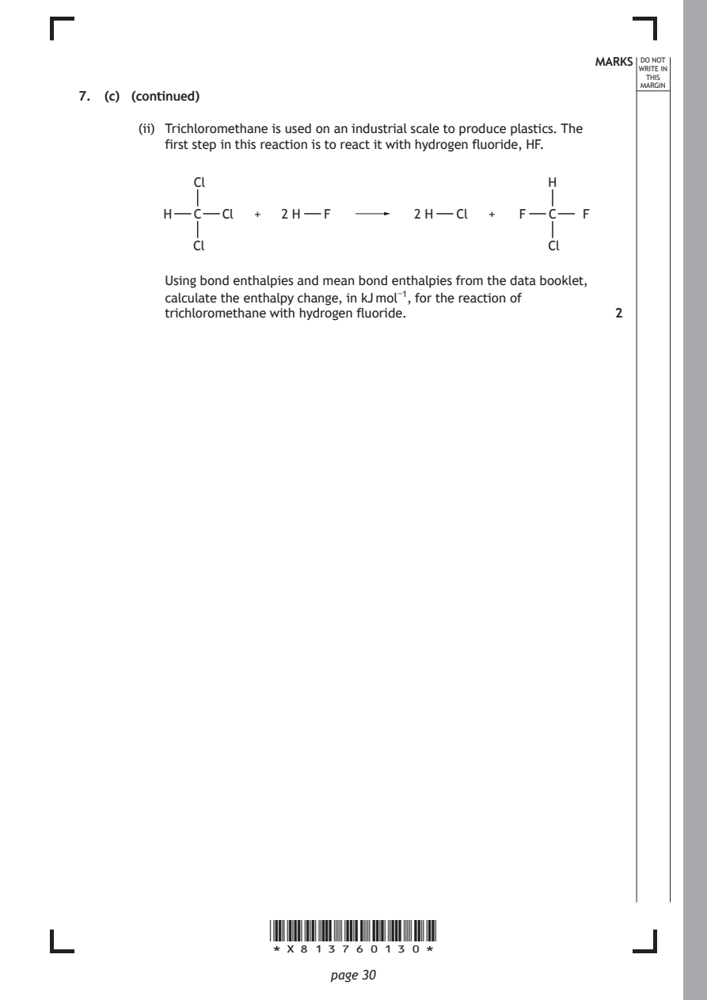
Selectable page text
MARKS _{W}^{D}_{R}^{O}_{I} _{T}^{N}OT
E IN
THIS
MARGIN
7. (c) (continued)
(ii) Trichloromethane is used on an industrial scale to produce plastics. The
first step in this reaction is to react it with hydrogen fluoride, HF.
Cl H
H C Cl + 2 H F 2 H Cl + F C F
Cl Cl
Using bond enthalpies and mean bond enthalpies from the data booklet,
calculate the enthalpy change, in kJ mol⁻¹, for the reaction of
trichloromethane with hydrogen fluoride. 2
*X813760130*
page 30PDF page 31
Paper 2, Question 8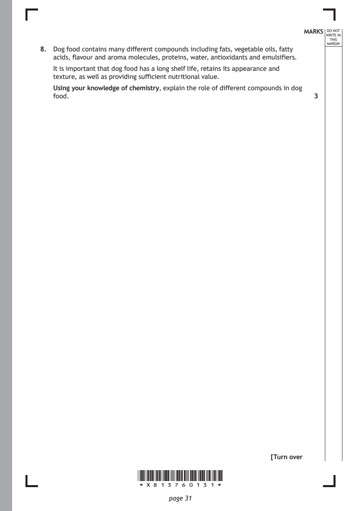
Selectable page text
MARKS _{W}^{D}_{R}^{O}_{I} _{T}^{N}OT
E IN
THIS
MARGIN
8. Dog food contains many different compounds including fats, vegetable oils, fatty
acids, flavour and aroma molecules, proteins, water, antioxidants and emulsifiers.
It is important that dog food has a long shelf life, retains its appearance and
texture, as well as providing sufficient nutritional value.
Using your knowledge of chemistry, explain the role of different compounds in dog
food. 3
[Turn over
*X813760131*
page 31PDF page 32
Paper 2, Question 9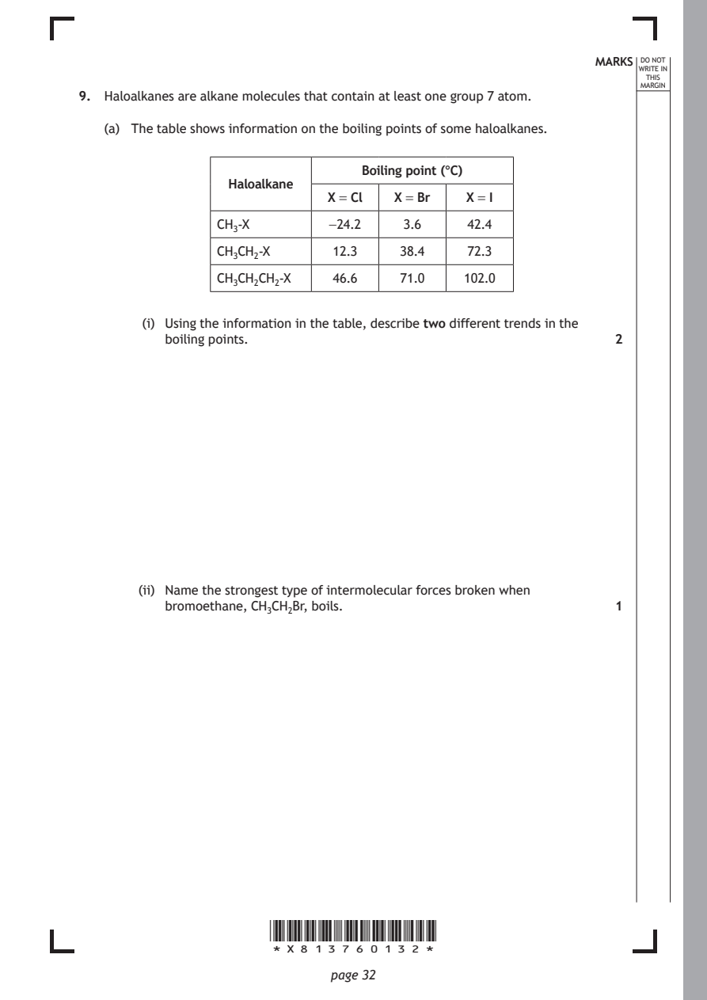
Selectable page text
MARKS _{W}^{D}_{R}^{O}_{I} _{T}^{N}OT
E IN
THIS
MARGIN
9. Haloalkanes are alkane molecules that contain at least one group 7 atom.
(a) The table shows information on the boiling points of some haloalkanes.
Boiling point (°C)
Haloalkane
X = Cl X = Br X = I
CH₃‑X -24.2 3.6 42.4
CH₃CH₂‑X 12.3 38.4 72.3
CH₃CH₂CH₂‑X 46.6 71.0 102.0
(i) Using the information in the table, describe two different trends in the
boiling points. 2
(ii) Name the strongest type of intermolecular forces broken when
bromoethane, CH₃CH₂Br, boils. 1
*X813760132*
page 32PDF page 33
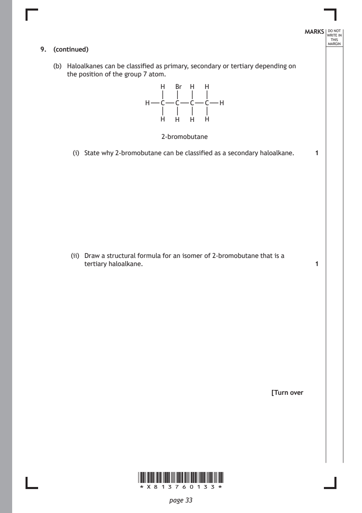
Selectable page text
MARKS _{W}^{D}_{R}^{O}_{I} _{T}^{N}OT
E IN
THIS
MARGIN
9. (continued)
(b) Haloalkanes can be classified as primary, secondary or tertiary depending on
the position of the group 7 atom.
H Br H H
H C C C C H
H H H H
2‑bromobutane
(i) State why 2‑bromobutane can be classified as a secondary haloalkane. 1
(ii) Draw a structural formula for an isomer of 2‑bromobutane that is a
tertiary haloalkane. 1
[Turn over
*X813760133*
page 33PDF page 34
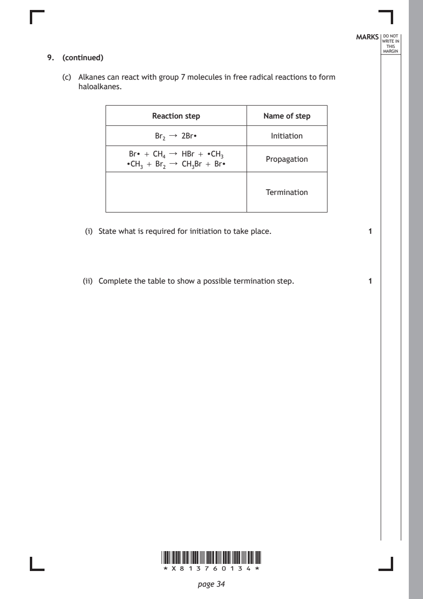
Selectable page text
MARKS _{W}^{D}_{R}^{O}_{I} _{T}^{N}OT
E IN
THIS
MARGIN
9. (continued)
(c) Alkanes can react with group 7 molecules in free radical reactions to form
haloalkanes.
Reaction step Name of step
Br₂ ↓ 2Br• Initiation
Br• + CH₄ ↓ HBr + •CH₃
Propagation
•CH₃ + Br₂ ↓ CH₃Br + Br•
Termination
(i) State what is required for initiation to take place. 1
(ii) Complete the table to show a possible termination step. 1
*X813760134*
page 34PDF page 35
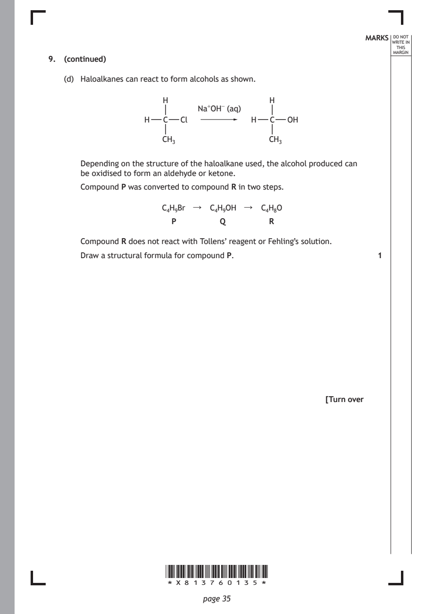
Selectable page text
MARKS _{W}^{D}_{R}^{O}_{I} _{T}^{N}OT
E IN
THIS
MARGIN
9. (continued)
(d) Haloalkanes can react to form alcohols as shown.
H H
Na⁺OH⁻ (aq)
H C Cl H C OH
CH₃ CH₃
Depending on the structure of the haloalkane used, the alcohol produced can
be oxidised to form an aldehyde or ketone.
Compound P was converted to compound R in two steps.
C₄H₉Br ↓ C₄H₉OH ↓ C₄H₈O
P Q R
Compound R does not react with Tollens’ reagent or Fehling’s solution.
Draw a structural formula for compound P. 1
[Turn over
*X813760135*
page 35PDF page 36
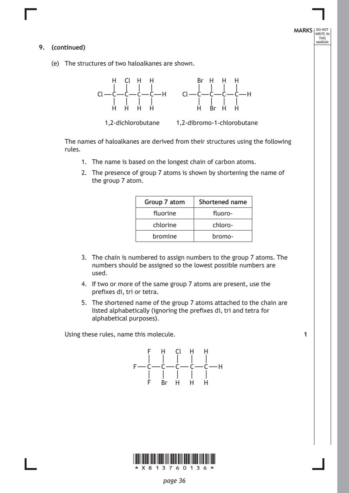
Selectable page text
MARKS _{W}^{D}_{R}^{O}_{I} _{T}^{N}OT
E IN
THIS
MARGIN
9. (continued)
(e) The structures of two haloalkanes are shown.
H Cl H H Br H H H
Cl C C C C H Cl C C C C H
H H H H H Br H H
1,2‑dichlorobutane 1,2‑dibromo‑1‑chlorobutane
The names of haloalkanes are derived from their structures using the following
rules.
1. The name is based on the longest chain of carbon atoms.
2. The presence of group 7 atoms is shown by shortening the name of
the group 7 atom.
Group 7 atom Shortened name
fluorine fluoro‑
chlorine chloro‑
bromine bromo‑
3. The chain is numbered to assign numbers to the group 7 atoms. The
numbers should be assigned so the lowest possible numbers are
used.
4. If two or more of the same group 7 atoms are present, use the
prefixes di, tri or tetra.
5. The shortened name of the group 7 atoms attached to the chain are
listed alphabetically (ignoring the prefixes di, tri and tetra for
alphabetical purposes).
Using these rules, name this molecule. 1
F H Cl H H
F C C C C C H
F Br H H H
*X813760136*
page 36PDF page 37
Paper 2, Question 10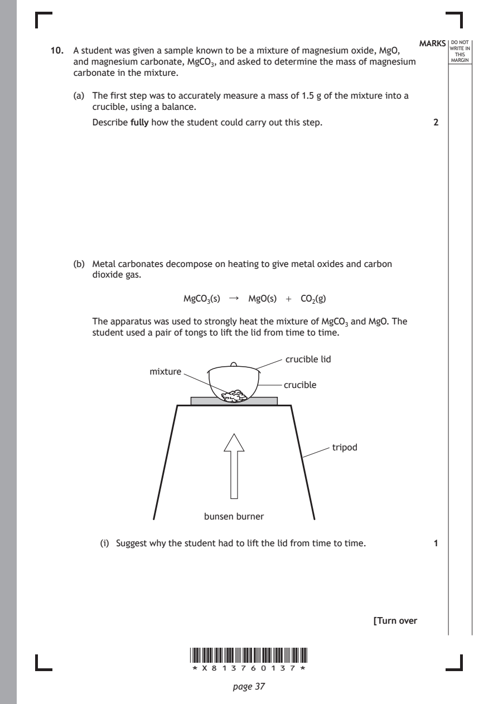
Selectable page text
MARKS _{W}^{D}_{R}^{O}_{I} _{T}^{N}OT
10. A student was given a sample known to be a mixture of magnesium oxide, MgO, E IN
THIS
and magnesium carbonate, MgCO₃, and asked to determine the mass of magnesium MARGIN
carbonate in the mixture.
(a) The first step was to accurately measure a mass of 1.5 g of the mixture into a
crucible, using a balance.
Describe fully how the student could carry out this step. 2
(b) Metal carbonates decompose on heating to give metal oxides and carbon
dioxide gas.
MgCO₃(s) ↓ MgO(s) + CO₂(g)
The apparatus was used to strongly heat the mixture of MgCO₃ and MgO. The
student used a pair of tongs to lift the lid from time to time.
crucible lid
mixture
crucible
tripod
bunsen burner
(i) Suggest why the student had to lift the lid from time to time. 1
[Turn over
*X813760137*
page 37PDF page 38
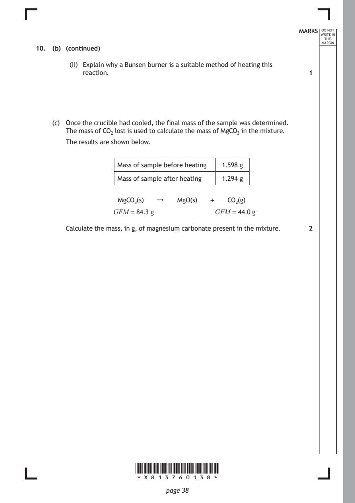
Selectable page text
MARKS _{W}^{D}_{R}^{O}_{I} _{T}^{N}OT
E IN
THIS
MARGIN
10. (b) (continued)
(ii) Explain why a Bunsen burner is a suitable method of heating this
reaction. 1
(c) Once the crucible had cooled, the final mass of the sample was determined.
The mass of CO₂ lost is used to calculate the mass of MgCO₃ in the mixture.
The results are shown below.
Mass of sample before heating 1.598 g
Mass of sample after heating 1.294 g
MgCO₃(s) ↓ MgO(s) + CO₂(g)
GFM = 84.3 g GFM = 44.0 g
Calculate the mass, in g, of magnesium carbonate present in the mixture. 2
*X813760138*
page 38PDF page 39
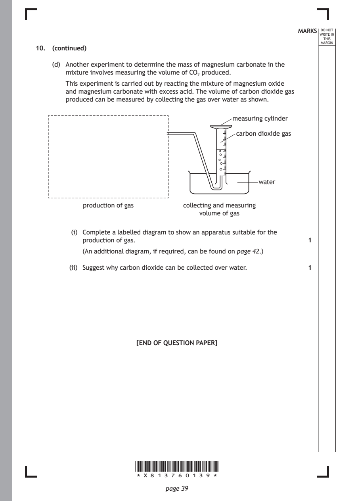
Selectable page text
MARKS _{W}^{D}_{R}^{O}_{I} _{T}^{N}OT
E IN
THIS
MARGIN
10. (continued)
(d) Another experiment to determine the mass of magnesium carbonate in the
mixture involves measuring the volume of CO₂ produced.
This experiment is carried out by reacting the mixture of magnesium oxide
and magnesium carbonate with excess acid. The volume of carbon dioxide gas
produced can be measured by collecting the gas over water as shown.
measuring cylinder
carbon dioxide gas
water
production of gas collecting and measuring
volume of gas
(i) Complete a labelled diagram to show an apparatus suitable for the
production of gas. 1
(An additional diagram, if required, can be found on page 42.)
(ii) Suggest why carbon dioxide can be collected over water. 1
[END OF QUESTION PAPER]
*X813760139*
page 39PDF page 40
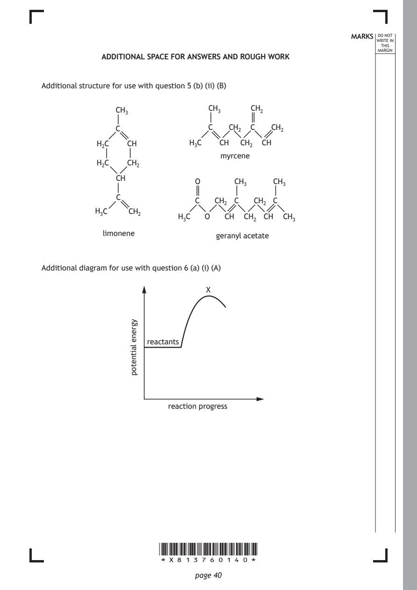
Selectable page text
MARKS _{W}^{D}_{R}^{O}_{I} _{T}^{N}OT
E IN
THIS
MARGIN
ADDITIONAL SPACE FOR ANSWERS AND ROUGH WORK
Additional structure for use with question 5 (b) (ii) (B)
CH₃ CH₃ CH₂
C C CH₂ C CH₂
H₂C CH H₃C CH CH₂ CH
myrcene
H₂C CH₂
CH
O CH₃ CH₃
C
C CH₂ C CH₂ C
H₃C CH₂
H₃C O CH CH₂ CH CH₃
limonene
geranyl acetate
Additional diagram for use with question 6 (a) (i) (A)
reactants
*X813760140*
page 40
ygrene
laitnetop
X
reaction progressPDF page 41
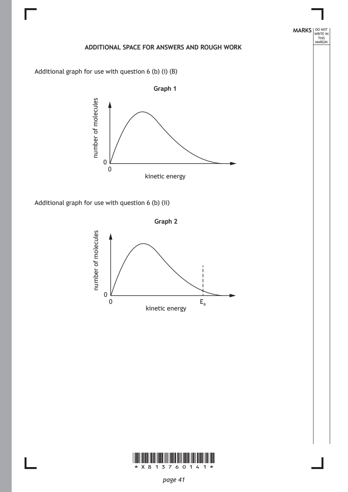
Selectable page text
MARKS _{W}^{D}_{R}^{O}_{I} _{T}^{N}OT
E IN
THIS
MARGIN
ADDITIONAL SPACE FOR ANSWERS AND ROUGH WORK
Additional graph for use with question 6 (b) (i) (B)
*X813760141*
page 41
selucelom
fo
rebmun
Graph 1
0
0
kinetic energy
Additional graph for use with question 6 (b) (ii)
selucelom
fo
rebmun
Graph 2
0
0 Eₐ
kinetic energyPDF page 42
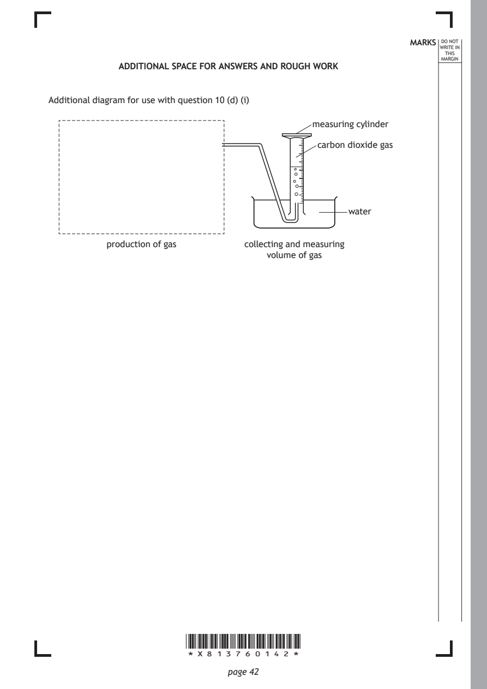
Selectable page text
MARKS _{W}^{D}_{R}^{O}_{I} _{T}^{N}OT
E IN
THIS
MARGIN
ADDITIONAL SPACE FOR ANSWERS AND ROUGH WORK
Additional diagram for use with question 10 (d) (i)
measuring cylinder
carbon dioxide gas
water
production of gas collecting and measuring
volume of gas
*X813760142*
page 42PDF page 43
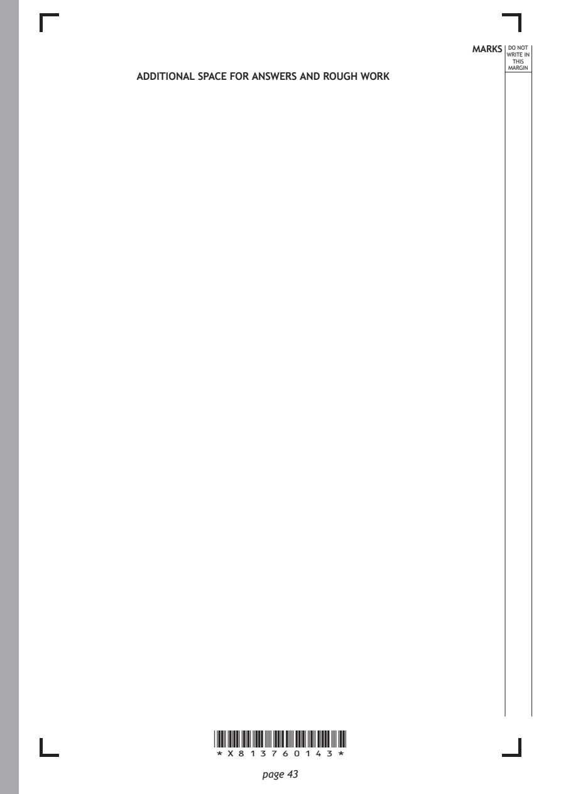
Selectable page text
MARKS _{W}^{D}_{R}^{O}_{I} _{T}^{N}OT
E IN
THIS
MARGIN
ADDITIONAL SPACE FOR ANSWERS AND ROUGH WORK
*X813760143*
page 43PDF page 44
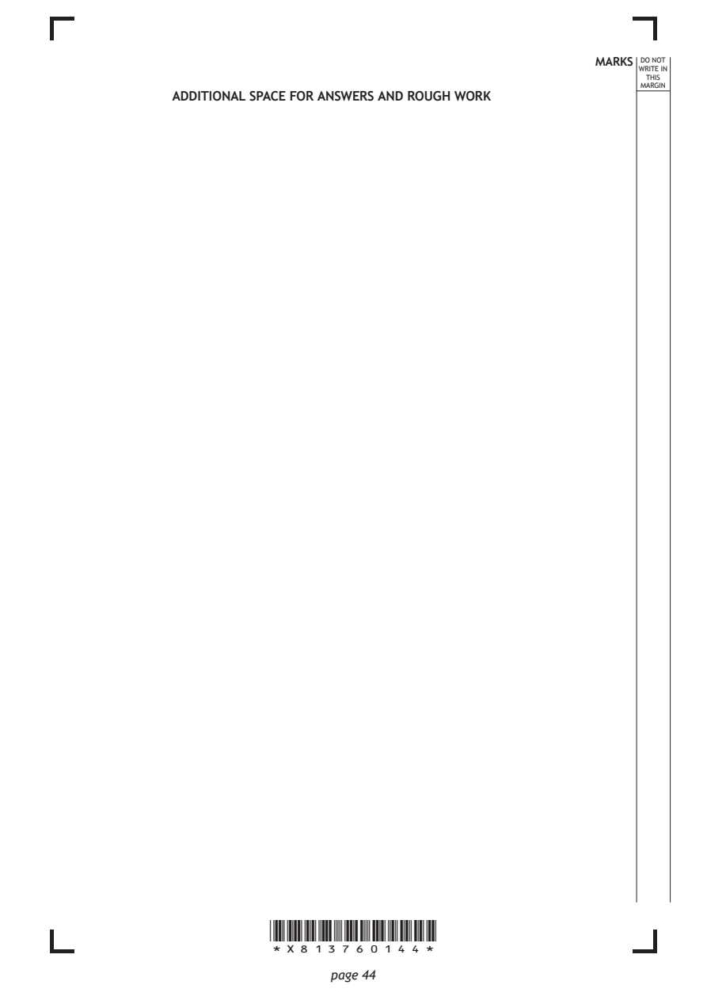
Selectable page text
MARKS _{W}^{D}_{R}^{O}_{I} _{T}^{N}OT
E IN
THIS
MARGIN
ADDITIONAL SPACE FOR ANSWERS AND ROUGH WORK
*X813760144*
page 44